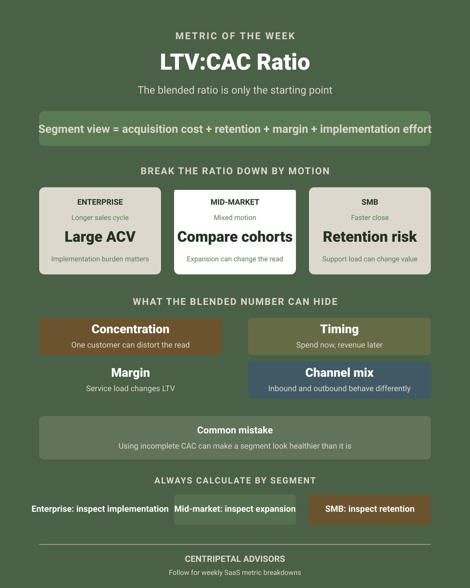
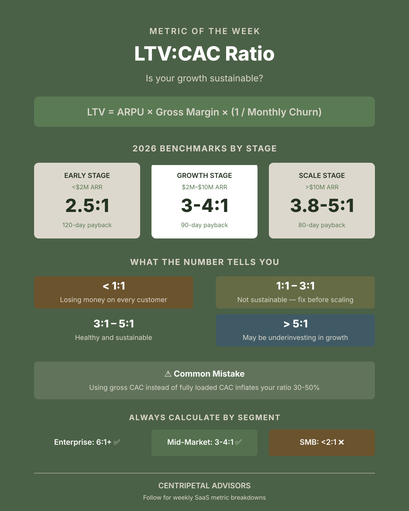

LTV:CAC by Segment: The Blended Metric Investors Don’t Trust
The ratio is useful when it opens a better operating question. A blended number often closes the conversation too early.

Start with the definition, not the benchmark
LTV:CAC is not one universal formula. LTV can be built from cohort retention, gross margin, and realized revenue. CAC can include sales salaries, marketing, tools, commissions, onboarding, and allocated overhead. If those definitions change, the comparison is not a trend—it is a different metric.
Use the ratio as a diagnostic. A change should lead to a question about the underlying motion: did the customer mix change, did payback lengthen, did churn move, or did the team invest ahead of a new segment?

Why the blended ratio hides decisions
Enterprise, mid-market, and SMB customers can have entirely different economics. Enterprise may require more sales capacity and implementation work while producing larger, longer-lived contracts. SMB may close faster but churn earlier and consume more support relative to revenue. One blended ratio averages away the reason the numbers moved.
| Segment question | What to inspect | Decision it can inform |
|---|---|---|
| How expensive is acquisition? | Fully loaded sales and marketing cost, cycle length, channel, and win rate. | Where to add capacity or narrow the target market. |
| How durable is value? | Gross margin, cohort retention, expansion, contraction, and implementation burden. | Which customers deserve product and service investment. |
| How quickly does cash arrive? | Billing terms, collection timing, onboarding cost, and renewal cadence. | Whether growth is financeable at the current pace. |
Use the metric to choose the next question
A falling segment ratio may mean the company is buying a less attractive customer, or it may reflect a deliberate move upmarket before the lifetime value is visible. A high ratio may be healthy, or it may mean the company is underinvesting in a market it could win.
Frequently asked questions
Why calculate LTV:CAC by segment?
A blended ratio can hide differences in contract size, retention, sales cycle, implementation cost, and acquisition channel. Segment analysis shows where growth creates or destroys value.
What is the most common LTV:CAC calculation error?
Using incomplete CAC or inconsistent LTV definitions. Fully loaded acquisition cost, cohort retention, gross margin, and a consistent time window are needed for a useful comparison.
Make unit economics decision-ready.
Connect segment economics to the broader SaaS finance scorecard and the cash required to support growth.
Open the SaaS Finance Scorecard